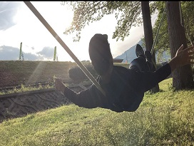
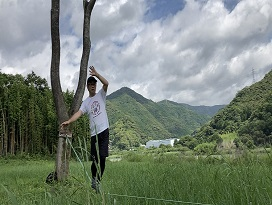
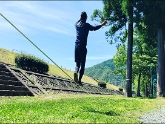
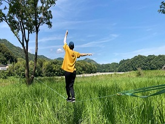
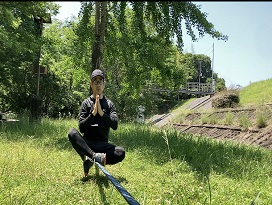

ABOUT
Slacklineとは．．．

Slacklineの歴史と日本での現状
ヨセミテ公園にてクライマーが公園内の杭に張られていたチェー
ンに遊びで乗り始めたのが始まり。
日本には、2009年頃に入ってきた。日本での認知度はまだまだ低
い状況で、そのスポーツ人口は4万人と言われている。
小さな子どもから高齢者までの多くの年齢層で愉しむことができ
るスポーツ。
『乗る』『歩く』だけで様々な心身への良好な効果が期待できる。
スポーツ界はもとより医療福祉の現場でも導入されつつある。
BENEFIT
slacklineの健康効果
バランス力UP（転倒予防）
幅5センチのベルトの上に乗る、歩くの繰返し
動作により体幹を鍛え。体軸が整い、バランス
感覚を養い、自然とバランス力も向上していく。
ダイエット効果
30分の全身運動により、その消費カロリーは
500Kclに達する。
また、足腰を中心に比較的に大きな筋肉を動か
すため消費エネルギーをあげ、ダイエット効果
を高める。
メンタル安定
『歩く瞑想』と表現されるほど容易にフロー状
態に入ることができる。
本場インドでも歩きながら瞑想する文化はある
が、これには高度な瞑想技術が必要とされる。
NEWS
新着情報
- 
- 
- 
- 
- 